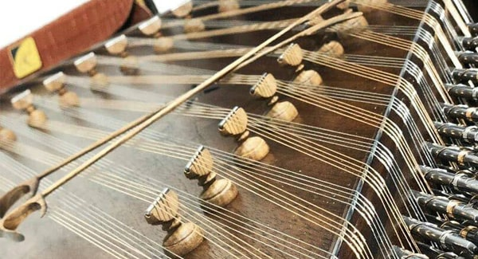

سنتور
سنتور ساز زهی موسیقی ایرانی است. فرهنگ دهخدا سنتور را اینگونه بازشناختهاست: از سازهای ایرانی به شکل ذوزنقه که دارای سیمهای بسیاری است و با دو زخمهٔ چوبی (مضراب) نواخته میشود. رایجترین نوع سنتور (۹ خرکی) دارای ۷۲ سیم است که به دستههای ۴ تایی و در ۱۸ دسته تقسیم میشود.
تاریخچه سنتور
سنتور بر پایهٔ بررسیها و پژوهشها یکی از کهنترین سازهای گستره ایران بهشمار میرود؛ کهنترین نشانهای که از این ساز برجامانده، از سنگتراشیهای آشور و بابلیان (۵۵۹پیش از میلاد) است. در این سنگتراشیها، صف تشریفاتی که به بزرگداشت آشور بانیپال بر پا شده، سازی که همانندی زیادی به سنتور دستورزی دارد، در میان آن صف دیده میشود.
ابوالحسن علی بن حسین مسعودی (مرگ به سال ۳۴۶ ه.ق) تاریخنگار نامدار و نویسنده نسک مروجالذهب در شرح اوضاع موسیقی در زمان ساسانیان، هنگام نام بردن از سازهای متداول موسیقی ساسانی، واژه سنتور (سنطور) را ذکر میکند. در کتب کهن و تألیفات ابونصر فارابی و ابن سینا نیز نام سنتور چند بار ذکر شدهاست.
عبدالقادر مراغهای ساز یا طوفان را معرفی کرد که شبیه سنتور دستورزی بود با این تفاوت که برای هر نت، تنها یک تار میبستند و با جابجا کردن خرکها، آن را کوک میکردند.
سنتور، سازی کاملاً ایرانی است که برخی ساخت آن را به ابونصر فارابی نسبت میدهند که مانند بربط، ساز دیگر ایرانی بعدها به خارج بردهشد.
برخی پژوهشگران بر این باورند که سنتور در زمانهای بسیار دور از ایران به دیگر کشورهای آسیایی رفتهاست، چنانکه امروزه گونههای مشابه این ساز در عراق، ترکیه، سوریه، مصر، پاکستان، هند، تاجیکستان، چین، ویتنام، کره، اوکراین و دیگر کشورهای آسیای میانه و نیز در یونان نواخته میشود.
شگفت نیست که چون نخستین پیانو به دست سرورالملک، سنتورنواز روزگار امیرکبیر رسید، در دم نواخته شد! او پس از دمی کار با این ساز گفت: این ساز روی دستگاه ماهور کوک شدهاست.
وی همان روز ماهور را نواخت و پس از کوتاه زمانی آن را، کوک کرد به گونهای که دستگاه شور را با آن نواخت و همین کوک ایرانی است که در این هنگام نیز روی پیانوی ایرانی انجام میگیرد. این کوک سرورالملکی نام دارد و واپسین دستگاه شور است که در کنار پردههای دلکش گرایلی خسروانی، آذربایجانی، گیلانی و گبری (زرتشتی) و کردی و جامهداران و… نواخته میشود!
بر پایهٔ اسناد و مدارک، نگارگریها و مینیاتورهای سدههای پیش، آنچه که ما دست ورزه به نام سنتور در اختیار داریم در واقع سنتوری است که از نزدیک به یکصد و پنجاه سال پیش (زمان قاجار) با شکل و شمایل کنونی خود در اختیار هنرمندان این مرز و بوم قرار دارد.
چنانکه سنتورهای محمدصادق خان (که نخستین نمونه صوتی ساز سنتور به جا مانده از دوران قاجار متعلق به وی میباشد)، حبیب سماع حضور و حبیب سماعی، در ابعاد، شمار خرک و چگونگی ساخت، بسیار نزدیک به سنتور دست ورزی است.

چوبهای مورد نیاز برای ساخت سنتور
میتوان از چوبهای گردو و فوفل و آزاد استفاده نمود، به لحاظ کمبود چوب فوفل و آزاد بیشتر از چوب گردو و به خاطر در دسترس بودن آن استفاده میشود.
(چوبهای گردو معمولاً صدای گرم، چوبهای آزاد صدای شیشه ای و کریستال، و… دارند)
بهترین چوب گردو، چوبهای باغی هستند که در بازدهی صدا مرغوبیت بیشتری نسبت به چوبهای دیگر دارد، بهترین چوبهای گردو را میتوان از مناطق سردسیر به لحاظ بافت منسجمی که دارند تهیه کرد، به عنوان مثال تنههای گردو شهرهای تویسرکان، سنندج، طالقان و زنجان دارای کیفیت مناسب میباشند.
چوب گردو را میتوانیم به صورت گرده یا به صورت الوار تهیه نماییم. بهتر است از چوبهای قطور و سالخورده که رنگ چوب از تیرگی زیادی برخوردار است استفاده نماییم.
چوب گردو را بعد از الوار کردن قسمتهای مناسب آن را انتخاب کرده و جهت ورقه کردن برش میدهیم سپس چوبهای ورقه شده را جهت شیره زدایی درون آب انداخته و میجوشانیم تا صمغ چوبها از بین برود، سپس ورقهها را پس از شیره زدایی در جای مناسب و سایه گذاشته تا به مرور زمان خشک شوند.
لازم است ذکر شود که در صورت خشک شدن چوبها بایستی حتیالمقدور چند سالی از خشک شدن آنها بگذرد تا آمادگی کامل برای ساختن ساز را پیدا بکند.
مراحل ساخت ساز
مراحل ساخت ساز بر ۳ اساس پایهگذاری میشود:
- انتخاب چوب مناسب
- پلگذاری دقیق
- تراش صفحههای زیر و رو
ابتدا آماده کردن کلاف یا اسکلت ساز کلاف را میتوانیم از چوب گردوی سخت و تیره انتخاب نماییم تا از استحکام آن اطمینان به عمل آید.
مرحله بعدی انتخاب صفحه زیر میباشد.
پس از انتخاب چوب مناسب کلاف را بر روی صفحه میچسبانیم. سپس به سوراخ کردن جای گوشیها و سیمگیرها میپردازیم.